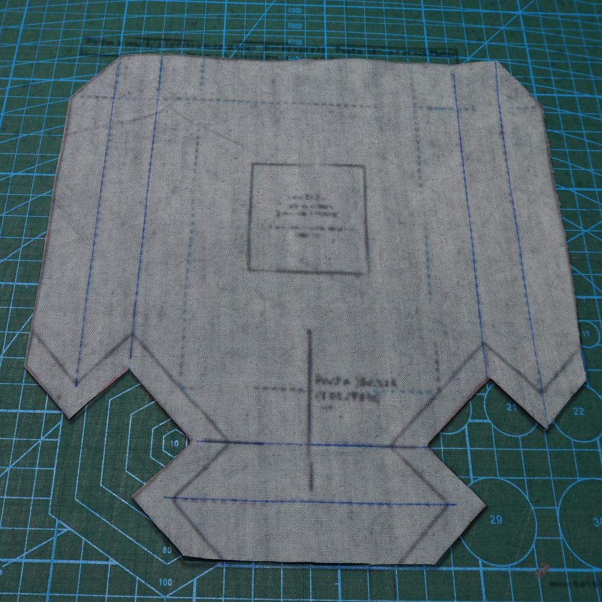
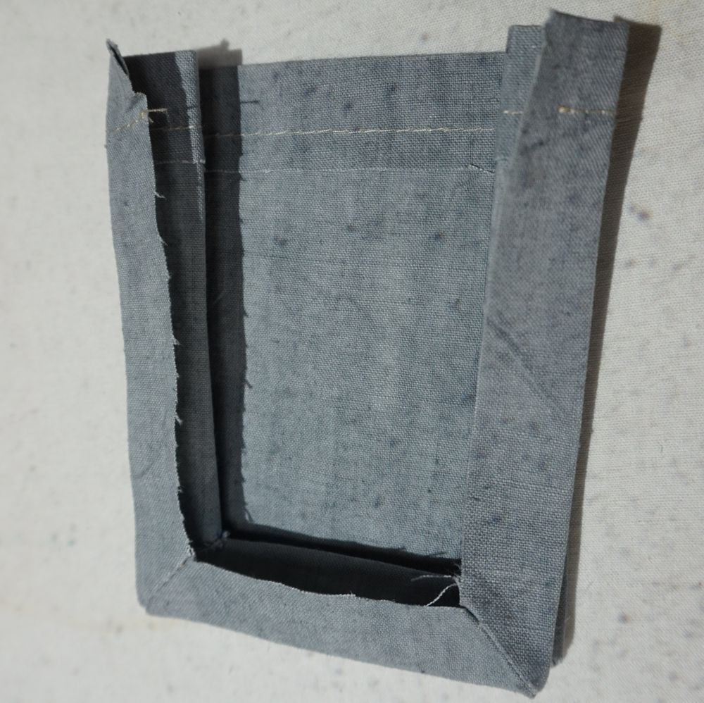
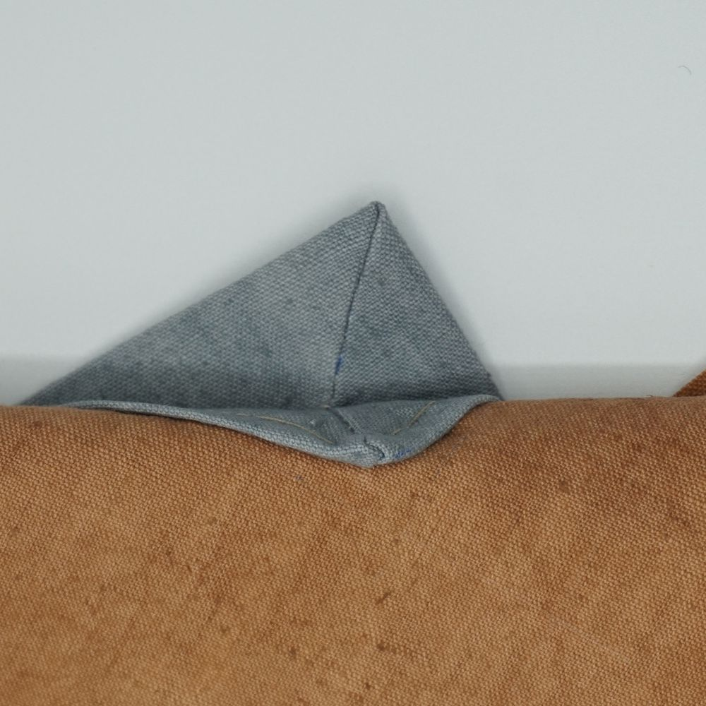
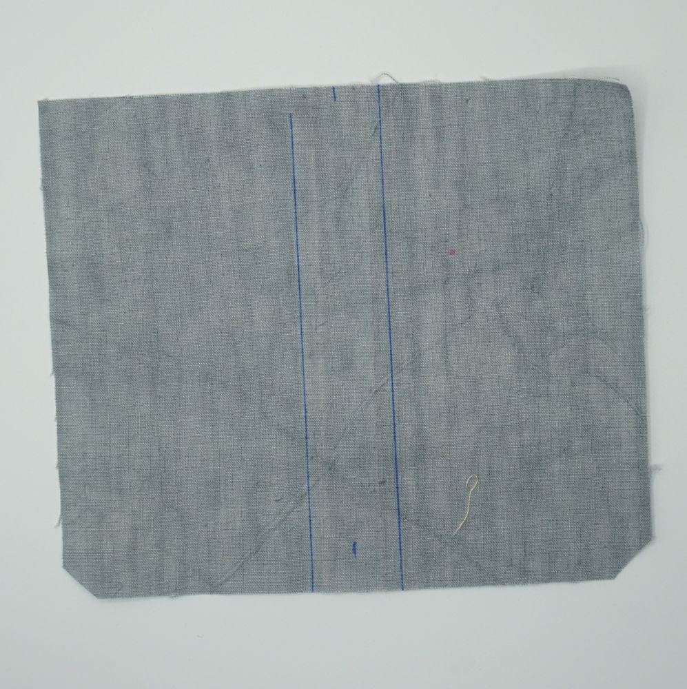
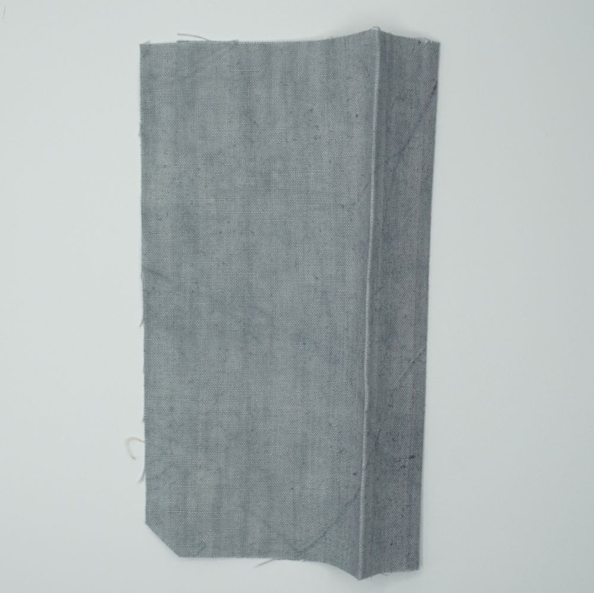
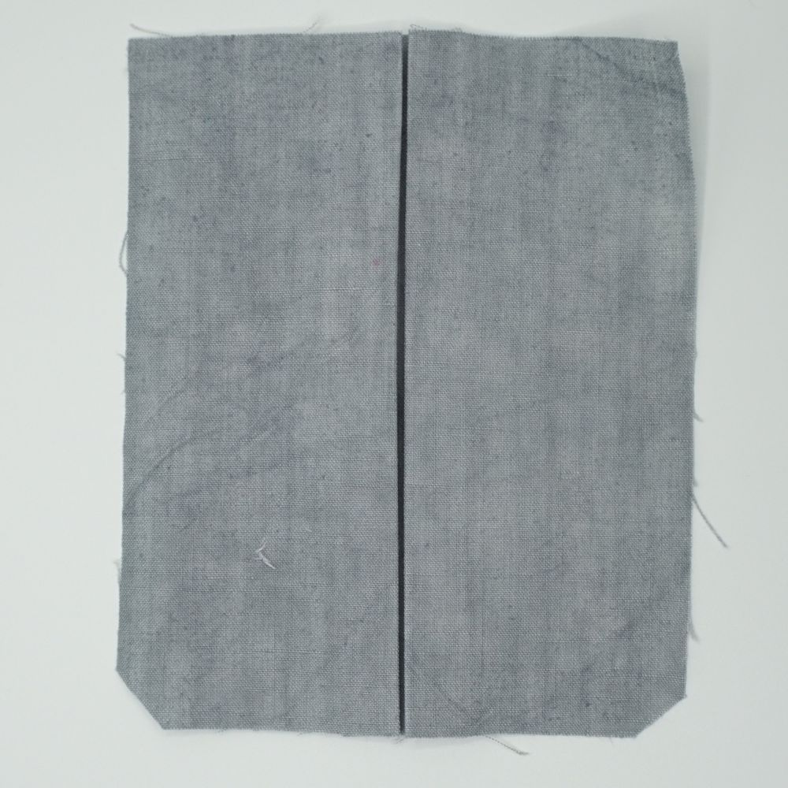

Poches plaquées : guide de couture
Ce guide explique l’assemblage de la poche plaquée à soufflet latéral, variante en une pièce. Le patron se télécharge sur la page Poches plaquées.
Poche avec soufflet latéral – variante en une pièce
Découpez la pièce.

La pièce découpée, repères de pli tracés Repliez les angles de la pièce : le côté bas droit sur le côté droit et le côté bas gauche sur le côté gauche.

Angle replié, maintenu par des pinces Cousez en respectant soigneusement la marge de couture.

Angles cousus Dégagez les angles pour faciliter le retournement.

Angle dégagé Après retournement, repassez soigneusement pour marquer les plis.

Poche retournée et repassée Positionnez la pièce sur votre emplacement de poche et cousez tous les côtés de la pièce, à l’exception du haut.

Poche positionnée sur son emplacement Produit fini

La poche finie, assemblée sur la pièce principale 
Le coin supérieur du soufflet, poche cousue
Ce guide couvre également la poche avec soufflet latéral et soufflet central, variante à soufflets rapportés. Les seules différences sont, dans l’ordre :
- la réalisation du pli central (et, avec une entrée biseautée, la recoupe de l’entrée) ;
- la pose du revers rapporté ;
- le nombre de pièces, qui augmente le nombre de coutures (leur positionnement et les principes d’assemblage restent les mêmes).
Réalisation des plis d’un soufflet central
Entrée droite
Marquez les deux lignes qui délimitent le soufflet central.

Les deux lignes du soufflet tracées Marquez successivement ces deux lignes au fer.

Pli marqué au fer, ligne après ligne Retournez la pièce.

Pièce retournée, plis marqués Pliez chaque côté vers l’intérieur du soufflet, le pli se faisant sur une ligne centrale à l’intérieur du soufflet.

Côtés repliés vers l’intérieur du soufflet Marquez bien les plis au fer.
Choisissez la face que vous souhaitez pour votre poche : soufflet central à l’extérieur ou soufflet central à l’intérieur, donc invisible.

Soufflet central à l’extérieur Soufflet central à l’intérieur (invisible)
Entrée biseautée avec pli central
Réalisation identique à la description précédente, à l’exception des deux points ci-dessous :
Respect du sens du biseau par rapport au choix pli interne / pli externe
Soyez attentif au sens du biseau lors de la réalisation du pli central : il est différent pour une poche droite et pour une poche gauche. Réalisez le pli selon votre choix (pli interne ou pli externe), posez la pièce devant vous, face tournée vers l’extérieur de la poche une fois cousue, et vérifiez le sens du biseau pour une poche droite ou pour une poche gauche. Si le sens n’est pas le bon, aplatissez la pièce au fer pour effacer le pli, puis refaites le pli de l’autre côté.
L’ajustement de la bordure haute
Découpez la face avant le long de la ligne bleue pointillée du haut : c’est une droite, pas la forme de l’entrée.
Réalisez le pli central (voir ci-dessus), et fixez le pli au fer.
Sur la poche pliée, prolongez la ligne noire du haut de la face jusqu’à la croix rouge (repère sur le patron) qui marque la fin de la ligne de coupe, sur le rempli.

Ligne noire prolongée jusqu’à la croix rouge, puis recoupe Recoupez le surplus de tissu en suivant cette ligne.
Cousez le revers ajouté : il recouvre le haut de la poche et masque la recoupe.